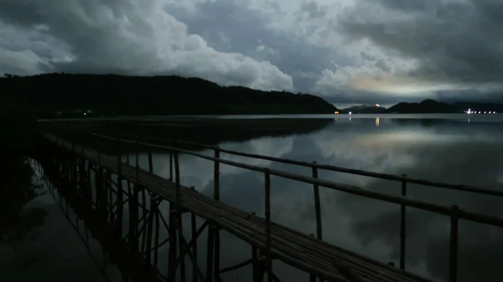
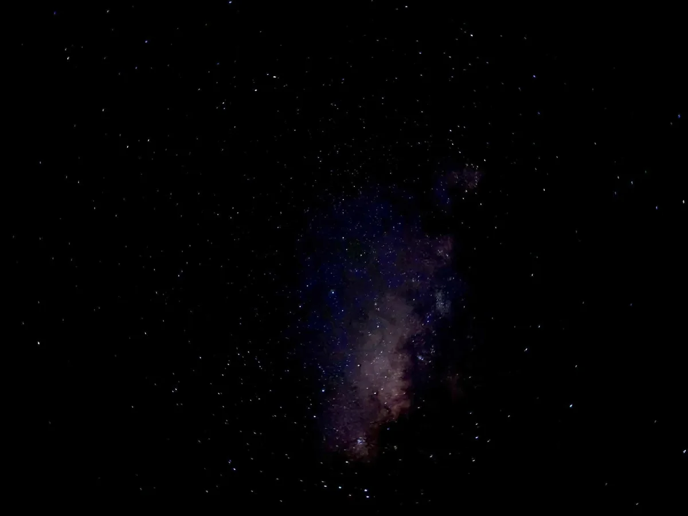
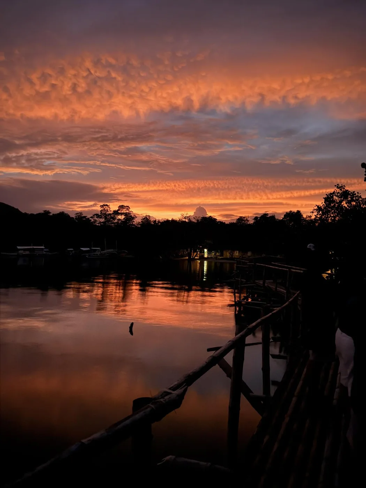

01
DAY
01
DAY
EXPERIENCES
Explore by day. Discover a quieter side after dark.
Current experiences are shown with their posted per-person rates and the environmental conditions that can shape each visit.
CHOOSE YOUR EXPERIENCE
Find your way
Find your way
into the wild.
Start in the mangroves, stay for the evening, or experience the park across daylight and night. Tour A and Tour B have group-based prices. Individual activity prices require park confirmation.
01
DAY

02 NIGHT
03 AFTER DARKFireflies + Night Kayak
ENQUIRE for individual rate
Boardwalk firefly viewing with kayaking for bioluminescent plankton and additional firefly viewing.
Conditions can vary with weather, wind, moonlight and tide.
Apply insect repellent before entering the park.

04 DAY → NIGHTThe Complete Experience
ENQUIRE for individual rate
Combine all three current activities for a fuller Kingfisher Park visit.
Activity timing depends on availability and conditions.
AFTER DARK
EXPLORE FIREFLY BOOKING
When daylight fades, the park reveals a quieter side.
Firefly viewing, nighttime kayaking and bioluminescent plankton are part of Kingfisher Park's current evening experience. What visitors see can vary with weather, wind, tide, moonlight and natural conditions.
FIREFLIES ABOVE
Natural sightings vary.
BIOLUMINESCENCE BELOW
Visibility depends on conditions.

BEFORE YOU ENTER
Apply insect repellent before entering the park. Avoid spraying in the firefly-viewing area.
WATCH WITHOUT TOUCHING
Do not touch or catch fireflies or touch mangrove leaves.
LET NATURE SET THE PACE
Firefly and bioluminescence sightings are subject to natural conditions.
BOOK KINGFISHER PARK
From choosing an experience to a confirmed visit.
Choose your experience, select your preferred date and time, and plan your visit to Kingfisher Park.
START BOOKING- 01 EXPERIENCE Choose what you want to do.
- 02 DATE & TIME Select from confirmed availability.
- 03 GUESTS Add guest and contact details.
- 04 REVIEW & CONFIRM Review your visit details before confirming.